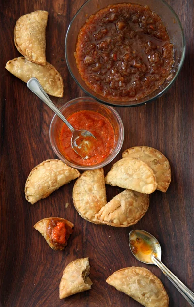

Fish Pie

Description
Benachin is also known as jollof rice. It literally translates to one pot in the wollof language. It is a hugely popular dish in west africa, with each country priding itself on having the best benachin. It is rich and delicious, better than any alcohol or drug out there, as it completely satiates.
Ingredients
- Fish
- Onion
- Jalapeno pepper
- Bell pepper
- Oil for frying
- Bouillon seasoning
- Flour
- Butter
- Baking powder
- Sugar
- Salt
Steps
- Fry fish till golden brown. Set aside
- Saute onions, bell pepper, jalapeno. Season with bouillon
- Add 2 tbsp of flour and cook till its color changes to light brown
- Shred fish, add to the pot with about 3 tbsp of water and let cook for about 10 minutes. Adjust seasoning to your liking.
- In a bowl, combine 305g of flour, baking powder, sugar and salt.
- Rub in butter. Add a little water in at a time. Knead
- Allow the dough to rest.
- Cut dough into circles. About 12 of them.
- More than halfway down each dough circle, place some filling. Fold other half of circle over the half with the filing. Seal it. Crimp edges with a fork.
- Fry each pie in heated oil till golden brown.
- Place in paper towel or newspaper to drain excess oil
- All done. Dig in!